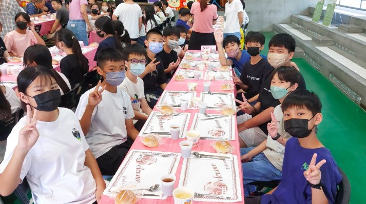

In June, as the graduation bell draws near, the Hsinmin campus is filled with warmth and emotion. Today we took part in the “Dream · Chasing the Light · Graduation Banquet,” a coming-of-age ceremony exclusively for our 19th graduating class — more than a meal, a ritual full of blessings and gratitude.
Before the plated meal, the Student Affairs Office arranged Chinese and Western dining-etiquette lessons, and today was the children's moment to put their learning into practice. At the table, the children dined elegantly and joyfully, raising their glasses to classmates and toasting teachers and parents — their mature, independent manner filling every teacher with pride.
The banquet was made complete by the company of many honoured guests, including the Tianzhong Township Office Secretary, the village chief, the Parents' Association chair and vice-chairs, and our beloved teachers, invited with handmade cards by the children. Thanks to the Parents' Association's steadfast support, the children received this unique and unforgettable graduation gift.
Over six years, the children gained knowledge, courage, persistence, and confidence on our campus. Today we want to say to all our graduates in the warmest, most sincere way: “Thank you for growing up so earnestly; thank you for becoming the most beautiful scenery at Hsinmin.” Run, children! Carry the courage Hsinmin has given you, and chase your dreams toward the light!

在畢業鐘聲即將響起的六月，新民國小的校園裡洋溢著滿滿的溫馨與感動。就在今天，我們參與了這場專屬於第 19 屆畢業生的「夢想‧逐光‧畢業盛宴」！這不只是一次用餐，更是一場充滿祝福與感謝的成長儀式。✨🎓
🍴 從課堂到餐桌：在排餐活動正式登場前，學務處特別為孩子們安排了中西餐禮儀課程，而今天就是孩子們實踐學習的完美時刻！餐桌上，孩子們舉止優雅、神情愉悅地享用著精心準備的排餐佳餚，自信地與同學們舉杯、向在場的師長與家長們致敬，那一幕幕成熟獨立的模樣，讓在場的每位師長都充滿了驕傲與感動。
🤝 今天的盛宴，因為有眾多貴賓的陪伴而更加圓滿！特別感謝田中鎮公所瓊如秘書、王境銘里長、陳志强會長、陳衍瑞副會長、劉權緯副會長及夫人、豐田課督，以及到場參與的畢業生家委們。孩子們也製作了精美的邀請函，邀請愛護他們的全校老師們，共同為孩子寫下這一階段完美的成長句點。因為有家長會一路以來的支持與疼愛，才能送給孩子們這份獨特、精緻又難忘的畢業禮物。
❤️ 六年的時光裡，孩子們在校園中學習知識、累積勇氣，在跌倒與站起之間學會堅持，在掌聲與鼓勵之中找到自信。今天，我們想用最溫暖、最真摯的方式對所有畢業生說：「謝謝你們認真長大，謝謝你們成為新民最美的風景。」奔跑吧！孩子們，帶著新民給予的勇氣，朝著夢想、追逐光芒！🕊️